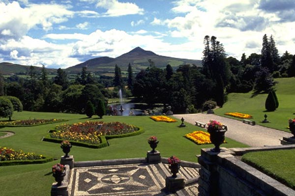
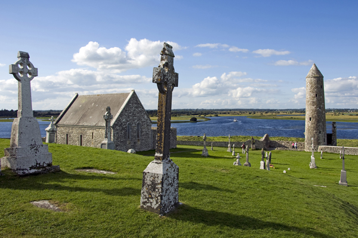
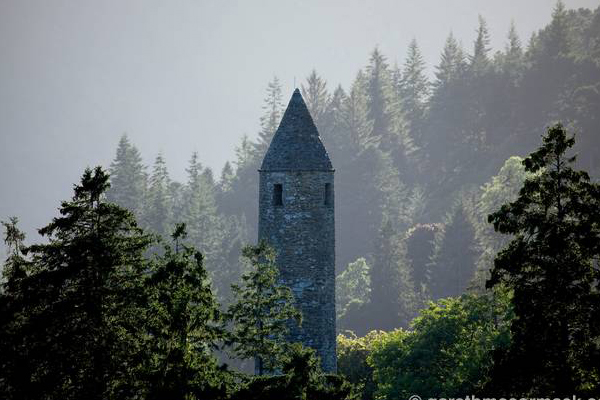
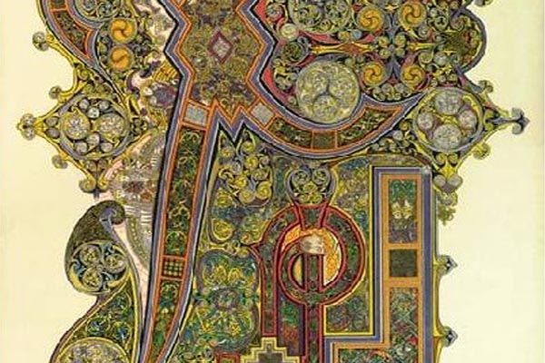
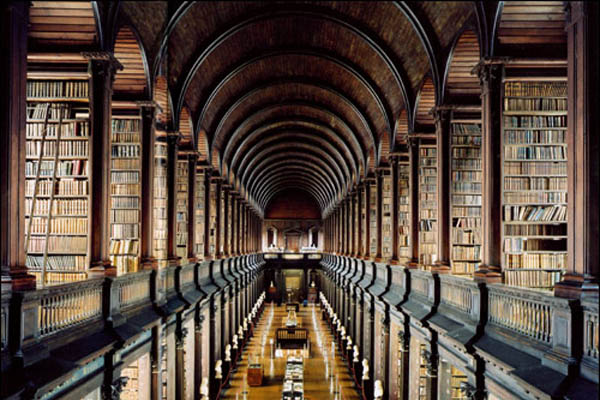
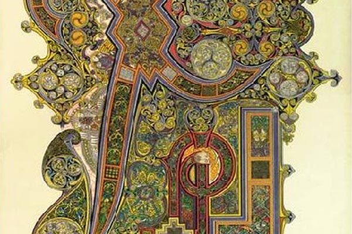
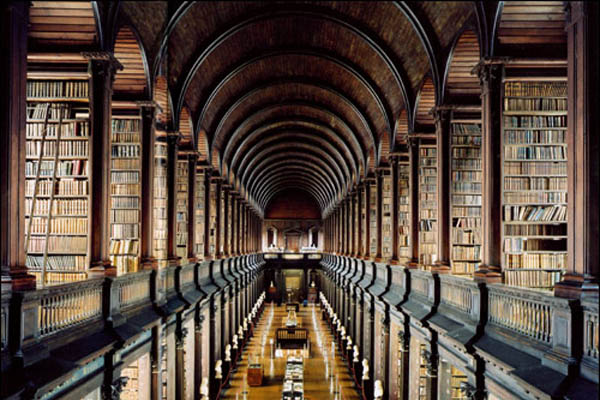

Take a break from the summer crowds and enjoy some of the busier sights without the crowds. Long stretches in the evenings make autumn the perfect outdoor season. Take a walk in the spectacular scenery of Powersourt Gardens, visit the historic sights at Clonmacnoise, take advantage of the quieter walks through stunning Glendalough, or stroll through Trinity College.

Powerscourt House and Gardens
Powerscourt is one of Europe's great treasures and Ireland's most famous estates. Gracing the Wicklow Mountains, 20km from Dublin
city centre, Powerscourt is a heritage property with a surprising difference and a great family attraction.
Powerscourt House now features a beautiful Terrace Cafe where Avoca serves up delectable cuisine.
Powerscourt offers visitors a sublime blend of formal gardens, sweeping terraces, statues and ornamental lakes with secret
hollows, rambling walks and beautiful walled gardens. The winding pathways feel like a secret garden at times, revealing new
treasures such as fountains from Paris, gates from Venice and statues from Rome. There are hundreds of different types of plants,
flowers and trees in the Gardens.
Powerscourt House was once a beautiful Palladian mansion, home to Lord Powerscourt and his family for over 350 years. Sadly the
house was destroyed by fire in the 1970s but was renovated, although not to its former glory.
Link to Discover Ireland website for more info

Clonmacnoise
Clonmacnoise is an ancient monastic site near Shannonbridge, County Offaly. It was founded by St Ciaran in the mid-6th century
and over the years, it was a great centre of learning.
Many manuscripts, including the 11th-century Annals of Tighernach and the
12th-century Book of the Dun Cow, were written here by the monks and scholars of the time.
Today, visitors can see three high crosses, a cathedral, seven churches and two round towers. They will also pass through the visitor centre,
which displays a number of cross-slabs and the 9th-century Cross of the Scriptures.
Link to Discover Ireland website for more info

Glendalough
The early Christian Monastic site of Glendalough, in County Wicklow, was founded by St Kevin in the 6th century.
Set in a glaciated valley with two lakes, the monastic remains include a superb round tower, stone churches and decorated crosses.
There are beautiful walks through the valley of different difficulty levels, with easier walks and around the lakes.
The Visitor Centre, which is also within the National Park, has an interesting exhibition and an audio-visual show. Maps, guides and
information on the area's cultural and natural heritage is available to visitors at the Visitor Centre.
Wicklow Mountains National Park, which covers much of upland County Wicklow, contains an area of approximately 20,000 hectares. This includes large areas of
mountain blanket bogs, including the Lugnaquilla and Liffey Head Bog complexes and Glendalough Wood Nature Reserve.
Link to Discover Ireland website for more info
Trinity College
Trinity College, right in the heart of Dublin centre, has the largest library in Ireland, dating back to the establishment of the college in 1592. Today it has 5 million printed volumes with
extensive collections of journals, manuscripts, maps and music reflecting more than 400 years of academic development.
The most famous of its manuscripts, the Book of Kells and the Book of Durrow, were presented by Henry Jones, Bishop of Meath.
The library was endowed with legal deposit privilege in 1801 and continues to receive copies of material published in the United Kingdom and Ireland.
The library supports the learning and research needs across all disciplines of Trinity College; it is a major research library of international repute; it
provides services to a wide range of external users and institutions; it contributes to the development of creative initiatives in information provision and
its exhibitions of manuscripts and other treasures attracts hundreds of thousands of visitors to visit the Old Library each year.
Link to Discover Ireland website for more info
 


